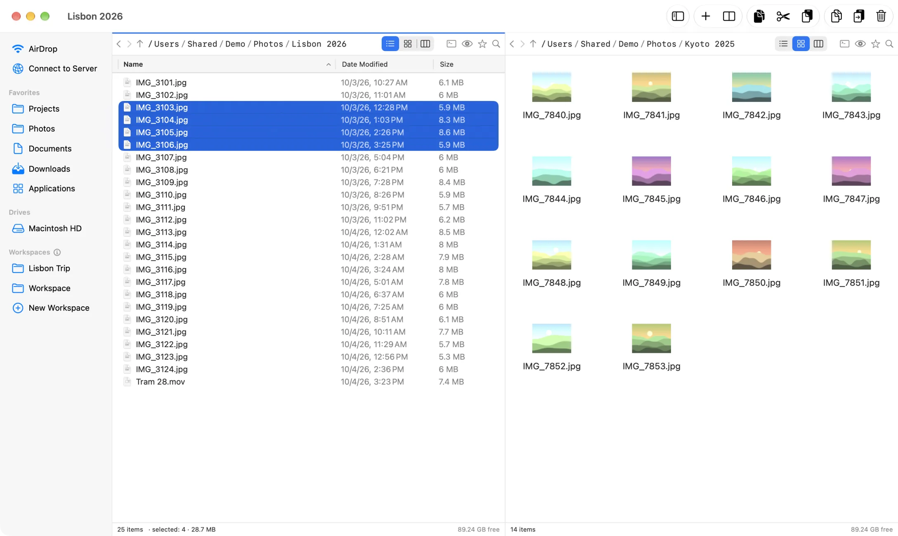
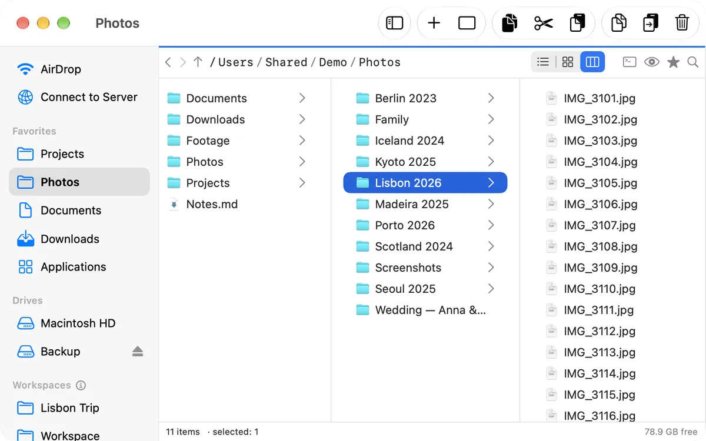
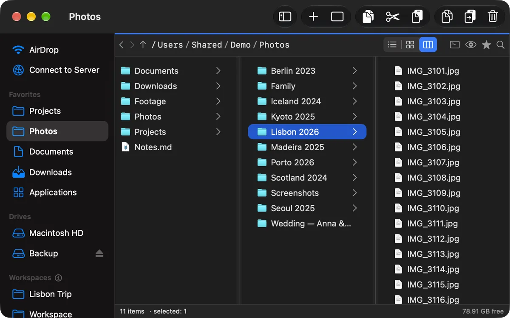
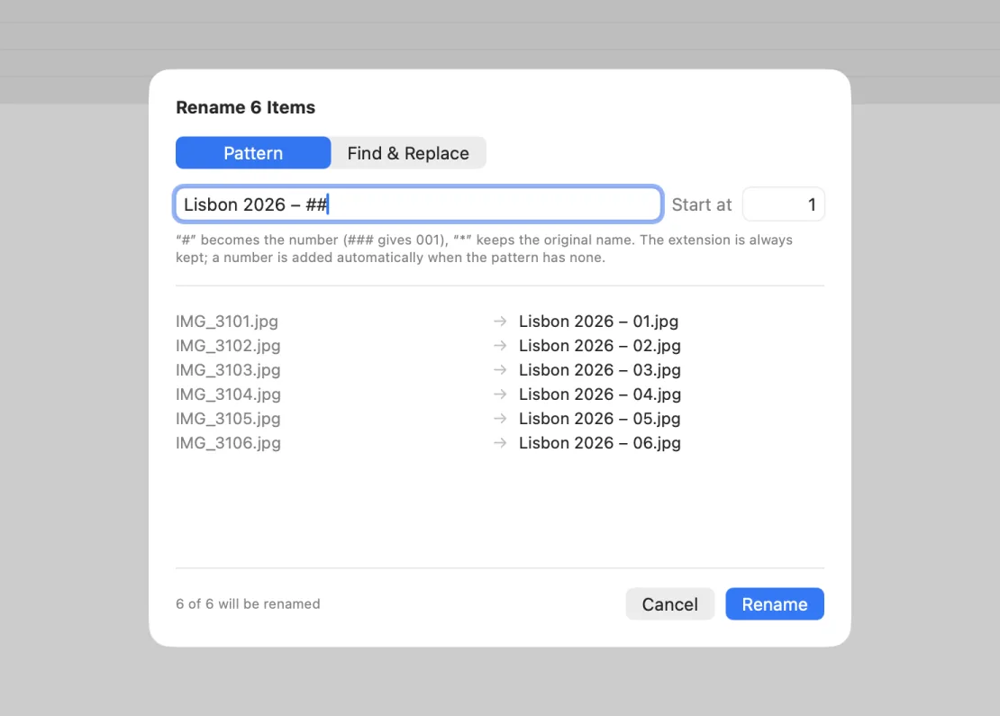
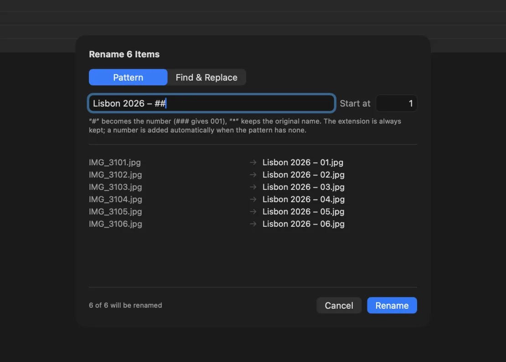
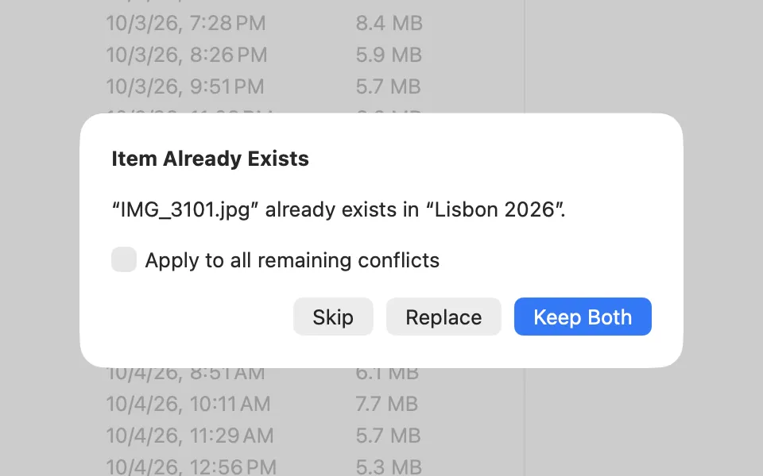
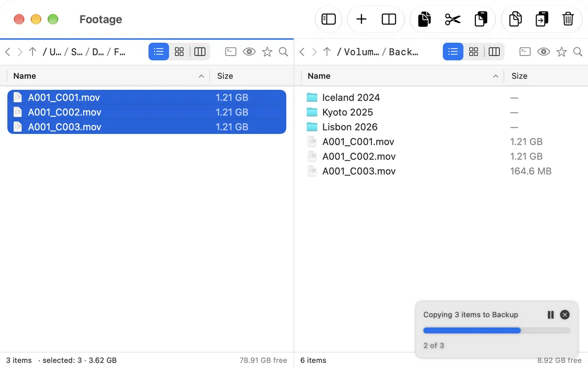
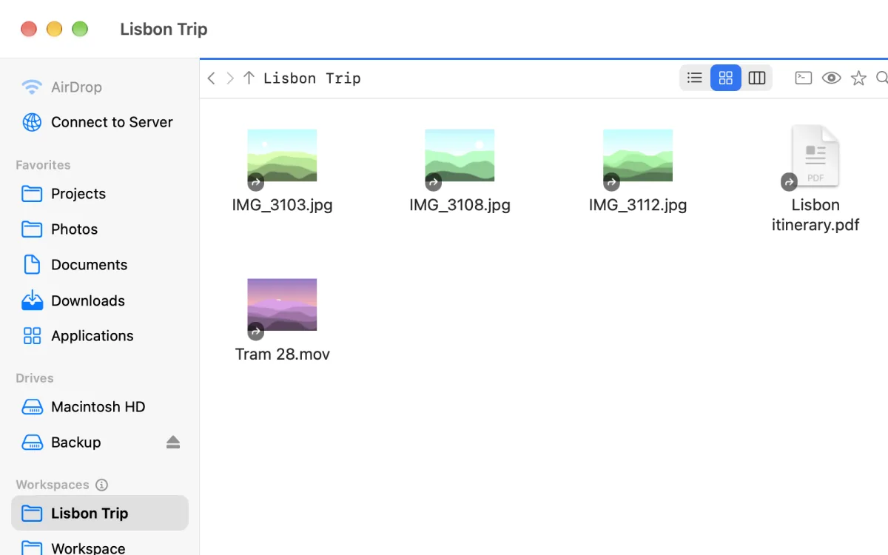

免费开源 · macOS 13.5+ · Apple 芯片
为离不开键盘的人打造的双栏文件管理器
Marlia 把 Total Commander 的工作方式带到了 Mac 上。按 F5 复制到另一栏，按 F6 移动，按 Tab 切换栏。它基于原生 AppKit 视图构建，即使文件夹里有成千上万个文件也依然流畅。


左侧列表，右侧图标，侧边栏汇集收藏、磁盘和工作区。
实际操作
五张照片，一个按键
在左侧选中文件，按 F5，它们就到了备份盘上。按 Tab 和 ⌘2 切换到另一栏，以缩略图查看。











动手试试
双栏操作，一键一步
点击一栏后用键盘操作，或点击下面的按键。选中文件，按一个键，它就会出现在另一栏里。这就是 Marlia 默认的“系统”外观。
在应用中，F5 和 F6 在后台运行，进度面板可暂停或取消；遇到同名文件时，可选择替换、跳过或保留两者。
功能
文件管理器该有的功能，全都不用离开键盘
双栏、标签页、三种视图
Tab · ⌘1 ⌘2 ⌘3列表、图标，以及带预览栏的 Finder 式分栏。每一栏有独立的历史记录，每个文件夹都会记住你的排序方式，窗口的标签页还能保存为命名组合。
Total Commander 式操作
F5 · F6复制、移动到另一栏，输入名称快速定位，按 *.jpg 这样的模式选择，反选。用 ⇧⌘C 从多个文件夹收集文件，一次粘贴。
后台文件操作
⌘Z · ⇧⌘Z复制、移动、创建副本、移到废纸篓和重命名都在后台运行，可暂停或取消。撤销最多可回退 50 步，重启后依然有效。
压缩包
zip · tar.gz/bz2/xz使用系统工具创建、解压和浏览压缩包，支持带密码的 ZIP。解压时会防范 zip-slip 路径。
工作区
symlinks把分散在磁盘各处的文件汇集到一个链接文件夹中。不会复制或移动任何文件，删除项目只会删除链接。
搜索、筛选、预览
⌘F · ⌥⌘F · Space按子串或正则表达式递归搜索，即时筛选栏，按空格键快速查看，信息面板直接预览文件本身：文本、代码、PDF、图片、视频。
融入 macOS
Finder · AirDrop · SMB与 Finder 互相拖放，颜色标签，AirDrop，在终端中打开，连接 SMB 共享，推出磁盘，直接从 .dmg 安装应用。在简介窗口中可以修改权限。复制到 U 盘时不会留下 ._ 文件。
自定义快捷键
⌘, · ⌘?所有快捷键都可以在设置中修改。收藏 1 到 9 对应 ⌥⌘1 到 ⌥⌘9，完整列表见帮助。
命令面板
⇧⌘P · ⇧⌘G菜单中的每条命令都能通过模糊搜索快速找到。“前往文件夹”支持输入路径并按 Tab 补全，路径栏中的每个 / 都能列出相邻的文件夹。
比较文件夹
⇧F2 · ⌘← ⌘→一键选出两侧缺少或较新的项目。用 ⌘← 和 ⌘→ 在另一栏打开文件夹。
自定义命令
Commands · zsh通过 Commands 菜单、命令面板或快捷键，对选中的文件运行你自己的 shell 脚本，可暂停或取消，就像 Total Commander 的用户命令。
按元数据重命名
[Date] · [Track]批量重命名并实时预览每个新名称：日期和时间取自 EXIF 或视频，曲目号、艺术家和标题取自音频标签，还能转换大小写。
同步文件夹
⌥⇧F2比较两个文件夹树，在执行之前先查看每处差异及对应操作。双向或单向同步；被替换和删除的文件会移到废纸篓。
空间去哪了
⌥⌘S · ⌥⌘L文件夹大小以条形显示各项占比；“最大文件”列出文件夹下任意位置最大的文件，一键在面板中显示。
主题
七种主题，均经过对比度检查
每套配色中，文件名在面板背景和选中高亮上的对比度都不低于 4.5:1。
安装
一分钟就能用起来
- 下载磁盘映像。
Marlia-1.4.dmg，或从 Releases 获取任意版本。 - 把 Marlia 拖到“应用程序”。
映像中应用和“应用程序”快捷方式并排放着。 - 首次手动打开。
右键点按 Marlia.app 并选择“打开”。在 macOS 15 及更高版本中，前往“系统设置”→“隐私与安全性”，点按“仍要打开”。 - 可选：授予“完全磁盘访问权限”。
这样打开“桌面”“文稿”和“下载”时就不会反复弹出提示。
隐私
- Marlia 应用本身不会向任何地方发送数据：没有统计分析，没有崩溃报告，也不检查更新。只有在你主动要求时（例如连接 SMB 服务器）才会访问网络。
- 本网站不使用 Cookie、统计分析或跟踪。字体和图片都由本网站自身提供。
- 你选择的语言保存在浏览器的本地存储中，不会发送到任何地方。
- 为显示最新版本，页面每次访问时会向 GitHub API 查询一次 Marlia 的版本发布信息，GitHub 会因此获得你的 IP 地址。
- 本网站托管在 GitHub Pages 上。与任何网站托管服务一样，GitHub 会记录访问请求，包括 IP 地址。详见 GitHub 隐私声明。